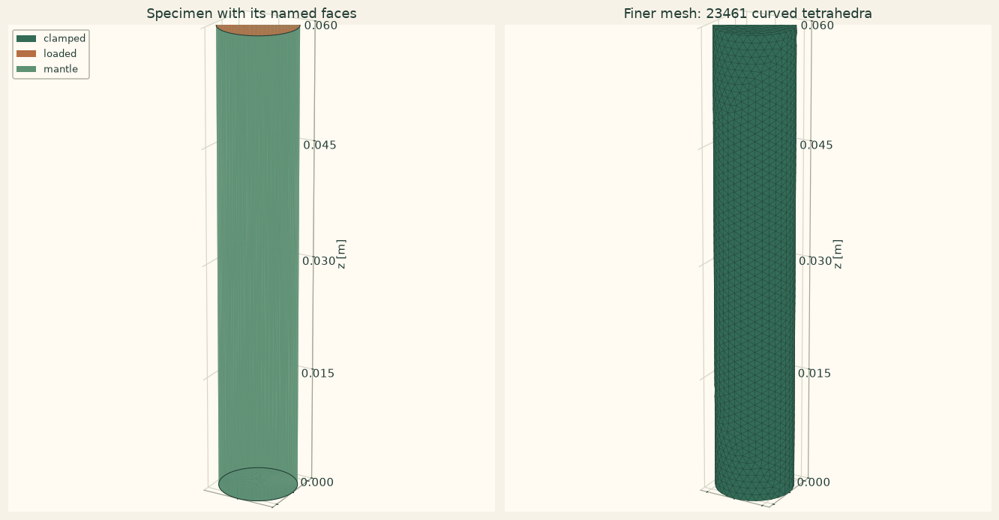

Docs › Examples › Multiaxial high-cycle fatigue of a cylindrical specimen
Fatigue · 3D
Multiaxial high-cycle fatigue of a cylindrical specimen
A cylindrical steel specimen is loaded by alternating tension and torsion with a phase shift between the two, and three critical-plane fatigue parameters are evaluated at its surface.
Run locally with OneSimulation. The example downloads are free. Running them requires an activated runtime. Runtime Alpha 0.2.1a7 · CPython 3.13 on macOS (Apple Silicon), Ubuntu 22.04 (x86-64), and Windows x64. Installation and activation · View pilot plans. Scope of the reference checks.

What it computes
OneSimulation reads the specimen from a STEP file, meshes it with curved quadratic tetrahedra and solves a unit tension and a unit torque in 3D linear elasticity; the stress history at the surface is the superposition of both fields, and the Findley, Matake and normal-stress parameters are searched over 4000 candidate planes for phase shifts from 0 to 90 degrees. The script that builds the STEP file comes with the notebook.
What it checks
The surface stresses match Saint-Venant within 0.1 %; the Findley parameter follows the closed form within 0.04 % and the normal-stress amplitude within 0.11 % for all phase shifts, the in-phase Matake value 186.1 MPa against 186.2 MPa, and the jumps of Matake where its maximum-shear plane is not unique are shown.
Geometry
The notebook starts at the import of the CAD file cylindrical_specimen_multiaxial_hcf.step: STEP (AP242), readable by any CAD program, with the names of the faces that the boundary conditions use. Put it next to the notebook.

The geometry script
The script cylindrical_specimen_multiaxial_hcf_geometry.py builds the geometry with the CAD objects of OneSimulation and writes the file. Change a dimension there, run it, and run the notebook again.
"""Geometry of the OneSimulation example "Multiaxial high-cycle fatigue of a cylindrical specimen".
Builds a cylindrical test specimen, 10 mm in diameter and 60 mm long, with the CAD objects of
OneSimulation, names its faces (clamped bottom, loaded top, mantle) and writes
cylindrical_specimen_multiaxial_hcf.step.
"""
from onesim.cad.d3 import Cylinder
specimen = Cylinder(radius=0.005, length=0.060)
specimen = specimen.grouped(
clamped=specimen.select(
faces=lambda face: face.kind == "plane" and face.center[2] < 1e-9
),
loaded=specimen.select(
faces=lambda face: face.kind == "plane" and face.center[2] > 0.060 - 1e-9
),
mantle=specimen.select(faces=lambda face: face.kind == "cylinder"),
)
specimen.save("cylindrical_specimen_multiaxial_hcf.step")The notebook
The complete notebook, cell by cell. Run it to produce the figures and the comparison printout.
Shafts, axles and springs are often loaded by bending or tension and by torsion at the same time. When the two loads do not rise and fall together, the principal directions rotate during a cycle and the load is non-proportional. Uniaxial fatigue data then no longer apply directly. Critical-plane criteria look at every plane through a material point, follow the normal stress \(\sigma_n(t)\) and the shear traction \(\boldsymbol\tau(t)\) on it, and combine them into a scalar fatigue parameter:
| criterion | parameter on a plane | critical plane |
|---|---|---|
| Findley | \(\tau_a+k\,\sigma_{n,\max}\) | plane with the largest parameter |
| Matake | \(\tau_a+k\,\sigma_{n,\max}\) | plane with the largest shear amplitude \(\tau_a\) |
| normal stress | \(\sigma_{n,a}\) | plane with the largest normal stress amplitude |
with the shear amplitude \(\tau_a\) (half the diameter of the shear traction path), the largest normal stress \(\sigma_{n,\max}\) during the cycle and a material constant \(k\) (here \(k=0.3\) for both).
Setup. A specimen of diameter 10 mm and length 60 mm, steel with \(E=210\) GPa, \(\nu=0.3\), clamped at the bottom. The top carries an alternating axial stress \(\sigma(t)=\sigma_a\sin\omega t\) with \(\sigma_a=200\) MPa and an alternating torque that gives the surface shear stress \(\tau(t)=\tau_a\sin(\omega t-\varphi)\) with \(\tau_a=120\) MPa. The phase shift \(\varphi\) runs from 0 (proportional) to 90° (fully out of phase). The specimen comes from the CAD file cylindrical_specimen_multiaxial_hcf.step, written by cylindrical_specimen_multiaxial_hcf_geometry.py with the CAD objects of OneSimulation.
| face | condition |
|---|---|
clamped | fixed |
loaded | axial traction \(\sigma\), or the torsional traction \(\tau\,r/R\) along the circumference |
mantle | free |
Reference. Away from the ends the surface is in plane stress with \(\sigma_{zz}=\sigma(t)\) and \(\tau_{\theta z}=\tau(t)\) (Saint-Venant). On a plane whose normal lies in the \(\theta z\) plane at the angle \(\theta\) to the axis, both tractions are sums of two sinusoids,
whose amplitudes follow from \(|A\sin\omega t+B\sin(\omega t-\varphi)|=\sqrt{A^2+B^2+2AB\cos\varphi}\). Maximising over \(\theta\) gives the Findley and normal-stress values for every phase shift. For proportional loading the closed forms are (Socie and Marquis, Multiaxial Fatigue, SAE 2000)
import numpy as np
from onesim.cad.exchange import load
from onesim.materials import IsotropicSolid
from onesim.meshing import TetrahedralMesher, with_order
from onesim.numerics import Numerics
from onesim.numerics.fem import FiniteElement, Lagrange
from onesim.numerics.linear import SparseDirect
from onesim.physics.solid_mechanics import (
FindleyCriterion,
FixedDisplacement,
LinearElasticity,
Traction,
TractionFree,
critical_plane,
matake_parameter,
)
from onesim.simulation import Problem, Simulation
from onesim.visualization import plots, theme
theme.set()Geometry and mesh
load returns the specimen with its named faces; two meshes of curved quadratic tetrahedra, 1.5 mm and 1.0 mm.
specimen = load("cylindrical_specimen_multiaxial_hcf.step")
faces = specimen.boundaries
radius, length = specimen.size[0] / 2, specimen.size[2]
sizes = [0.0015, 0.0010]
meshes = [
with_order(
TetrahedralMesher(target_size=size, curvature_angle=0.3).generate(specimen), 2
)
for size in sizes
]
view = plots.Camera(elevation=20, azimuth=-60)
fig = plots.figure(1, 2, size=(12, 7))
plots.geometry(
specimen,
selection={
"clamped": faces.clamped,
"loaded": faces.loaded,
"mantle": faces.mantle,
},
labels=False,
camera=view,
title="Specimen with its named faces",
ax=fig[0],
)
plots.mesh(
meshes[-1],
groups=("all",),
legend=False,
camera=view,
title=f"Finer mesh: {meshes[-1].cell_count} curved tetrahedra",
ax=fig[1],
)
plots.show()Model
Two linear load cases on each mesh: an axial traction of 1 MPa and the torsional traction that gives 1 MPa shear at the surface. Because the specimen is linear elastic, the stress at any time is the sum of the two unit fields scaled by \(\sigma(t)\) and \(\tau(t)\).
steel = IsotropicSolid(
density=7850.0,
specific_heat_capacity=460.0,
thermal_conductivity=50.0,
youngs_modulus=210e9,
poisson_ratio=0.3,
thermal_expansion_coefficient=12e-6,
)
model = LinearElasticity(domain=specimen.volume, material=steel)
unit_loads = {
"tension": lambda x, y, z: np.column_stack((0 * x, 0 * x, np.full_like(x, 1e6))),
"torsion": lambda x, y, z: np.column_stack((-y, x, 0 * x)) * 1e6 / radius,
}
numerics = Numerics(
spatial=FiniteElement(element=Lagrange(order=2)), linear_solver=SparseDirect()
)
fields = [
{
name: Simulation(
problem=Problem(
name=f"Unit {name}",
geometry=specimen,
physics=(model,),
boundary_conditions=(
FixedDisplacement(
boundary=faces.clamped, physics=model, value=(0.0, 0.0, 0.0)
),
Traction(boundary=faces.loaded, physics=model, value=traction),
TractionFree(boundary=faces.mantle, physics=model),
),
),
mesh=mesh,
numerics=numerics,
)
.solve_stationary()
.field(model.stress)
for name, traction in unit_loads.items()
}
for mesh in meshes
]Stress history at the surface
The unit stresses are evaluated at the surface point \((R, 0, L/2)\), where the circumferential direction is \(y\). One load cycle is sampled at 72 steps for each phase shift; the candidate planes are 4000 normals spread evenly over the half sphere.
point = np.array([[radius * (1 - 1e-4), 0.0, length / 2]])
tensor = lambda v: np.array(
[[v[0], v[3], v[5]], [v[3], v[1], v[4]], [v[5], v[4], v[2]]]
)
unit = [
{
name: tensor(np.asarray(field.evaluate(point))[0]) / 1e6
for name, field in mesh_fields.items()
}
for mesh_fields in fields
]
amplitude_axial, amplitude_shear, k = 200e6, 120e6, 0.3
cycle = np.linspace(0.0, 2 * np.pi, 73)
phases = np.radians(np.arange(0.0, 90.1, 7.5))
history = lambda stresses, phase: (
amplitude_axial * np.sin(cycle)[:, None, None] * stresses["tension"]
+ amplitude_shear * np.sin(cycle - phase)[:, None, None] * stresses["torsion"]
)
count = np.arange(4000) + 0.5
normals = np.column_stack(
(
np.sqrt(1 - (count / 4000) ** 2) * np.cos(np.pi * (1 + 5**0.5) * count),
np.sqrt(1 - (count / 4000) ** 2) * np.sin(np.pi * (1 + 5**0.5) * count),
count / 4000,
)
)
findley = [
[
critical_plane(
history(stresses, phase), normals, criterion=FindleyCriterion(k)
).scores.max()
for phase in phases
]
for stresses in unit
]
shear_plane = [
critical_plane(history(unit[-1], phase), normals, criterion=FindleyCriterion(0.0))
for phase in phases
]
peak_normal = [
critical_plane(
history(unit[-1], phase),
normals,
criterion=lambda normal, shear: normal.max(axis=1),
).scores
for phase in phases
]
matake = [
matake_parameter(plane.scores[plane.index], peak[plane.index], sensitivity=k)
for plane, peak in zip(shear_plane, peak_normal)
]
normal_amplitude = [
critical_plane(
history(unit[-1], phase),
normals,
criterion=lambda normal, shear: (normal.max(axis=1) - normal.min(axis=1)) / 2,
).scores.max()
for phase in phases
]Comparison with the closed-form values
First the surface stresses of the unit cases against Saint-Venant, then the three parameters for each phase shift against the plane-by-plane closed form.
theta = np.linspace(0.0, np.pi, 3601)
sine_sum = lambda a, b, phase: np.sqrt(a**2 + b**2 + 2 * a * b * np.cos(phase))
shear_reference = [
sine_sum(
-amplitude_axial * np.sin(theta) * np.cos(theta),
amplitude_shear * np.cos(2 * theta),
phase,
)
for phase in phases
]
normal_reference = [
sine_sum(
amplitude_axial * np.cos(theta) ** 2, amplitude_shear * np.sin(2 * theta), phase
)
for phase in phases
]
findley_reference = np.array(
[(tau + k * sigma).max() for tau, sigma in zip(shear_reference, normal_reference)]
)
normal_stress_reference = np.array([sigma.max() for sigma in normal_reference])
resolved = np.hypot(amplitude_axial / 2, amplitude_shear)
for size, stresses in zip(sizes, unit):
print(
f"mesh {1e3 * size:.1f} mm: σ_zz per MPa of tension {stresses['tension'][2, 2]:.4f}, "
f"τ_θz per MPa of surface shear {stresses['torsion'][1, 2]:.4f} (Saint-Venant: 1 and {1 - 1e-4:.4f})"
)
print(
f"proportional loading: Findley {findley[-1][0] / 1e6:.2f} MPa (closed form {(k * amplitude_axial / 2 + np.sqrt(1 + k**2) * resolved) / 1e6:.2f}), "
f"Matake {matake[0] / 1e6:.2f} MPa (closed form {(resolved + k * amplitude_axial / 2) / 1e6:.2f})"
)
print(
f"{'phase [°]':>9s} {'Findley, coarse':>16s} {'Findley, fine':>14s} {'reference':>10s} {'Matake':>8s} {'normal stress':>14s} {'reference':>10s} [MPa]"
)
for j, phase in enumerate(phases):
print(
f"{np.degrees(phase):9.1f} {findley[0][j] / 1e6:16.2f} {findley[1][j] / 1e6:14.2f} {findley_reference[j] / 1e6:10.2f} "
f"{matake[j] / 1e6:8.2f} {normal_amplitude[j] / 1e6:14.2f} {normal_stress_reference[j] / 1e6:10.2f}"
)
print(
"largest deviation from the reference on the finer mesh: "
f"Findley {100 * np.abs(np.array(findley[-1]) / findley_reference - 1).max():.2f} %, "
f"normal stress {100 * np.abs(np.array(normal_amplitude) / normal_stress_reference - 1).max():.2f} %"
)
print(
f"Matake at 90°: the shear amplitude is {shear_reference[-1][0] / 1e6:.1f} MPa both on the transverse plane (θ = 0, σ_n,max = "
f"{normal_reference[-1][0] / 1e6:.0f} MPa) and on the longitudinal plane (θ = 90°, σ_n,max = 0); the parameter is "
f"{(shear_reference[-1][0] + k * normal_reference[-1][0]) / 1e6:.0f} or {shear_reference[-1][0] / 1e6:.0f} MPa, depending on the plane chosen"
)Figure
The three fatigue parameters over the phase shift with the closed-form curves, and the stress path \((\sigma_{zz},\tau_{\theta z})\) at the surface point for three phase shifts. With growing phase shift the path opens from a line into an ellipse: the principal directions rotate, the largest normal stress amplitude falls and the Findley parameter falls less. The Matake parameter jumps where its plane of largest shear amplitude changes.
degrees = np.degrees(phases)
fig = plots.figure(1, 2, size=(16, 6))
plots.line(
points={
"Findley": (degrees, np.array(findley[-1]) / 1e6),
"Matake": (degrees, np.array(matake) / 1e6),
"normal stress amplitude": (degrees, np.array(normal_amplitude) / 1e6),
},
reference={
"Findley, closed form": (degrees, findley_reference / 1e6),
"normal stress, closed form": (degrees, normal_stress_reference / 1e6),
},
xlabel="phase shift φ [°]",
ylabel="fatigue parameter [MPa]",
title="Critical-plane parameters at the surface",
legend="lower left",
ax=fig[0],
)
plots.line(
y={
f"φ = {angle:.0f}°": (
history(unit[-1], np.radians(angle))[:, 2, 2] / 1e6,
history(unit[-1], np.radians(angle))[:, 1, 2] / 1e6,
)
for angle in (0.0, 45.0, 90.0)
},
xlabel="axial stress σ_zz [MPa]",
ylabel="shear stress τ_θz [MPa]",
title="Stress path during one cycle",
legend="upper left",
ax=fig[1],
)
plots.show()Going further
Add a mean stress to the tension and watch the Findley parameter rise through \(\sigma_{n,\max}\) while the normal stress amplitude stays; or replace the smooth specimen by a notched one and evaluate the parameters at the notch root, where the stress state is no longer plane.